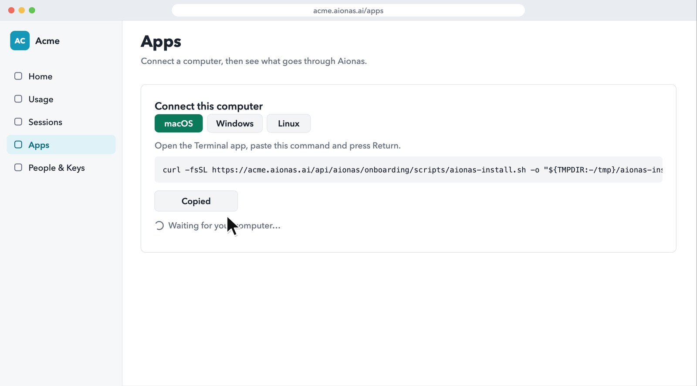
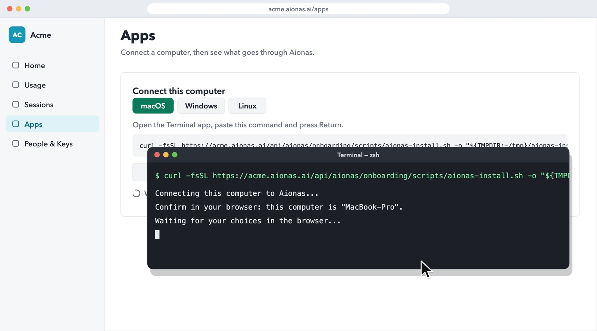
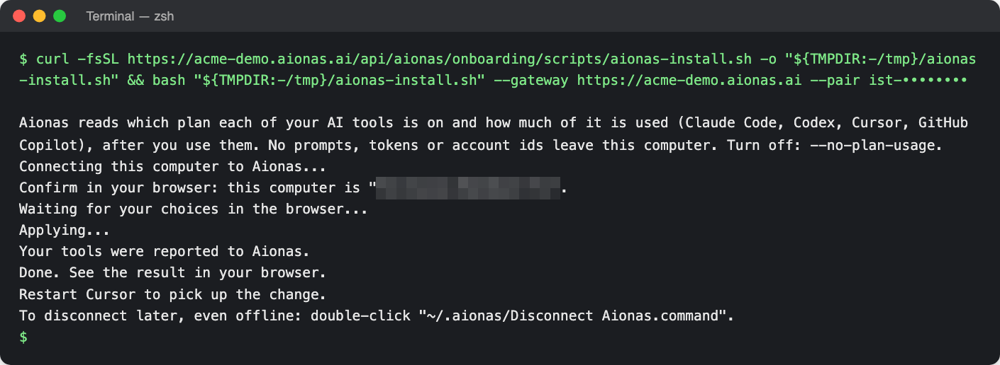
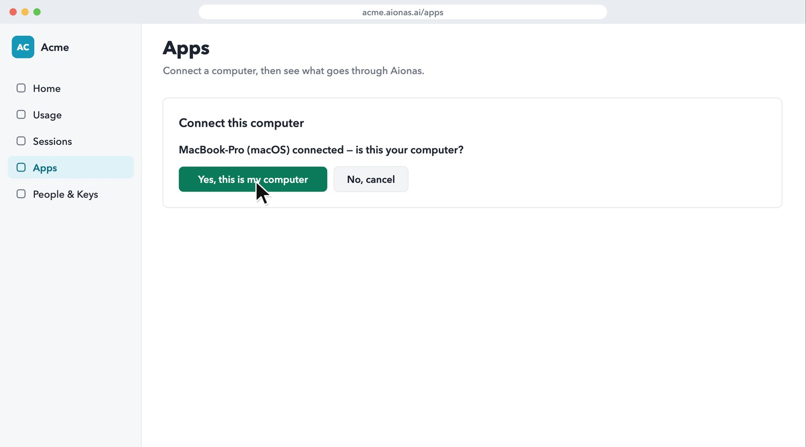
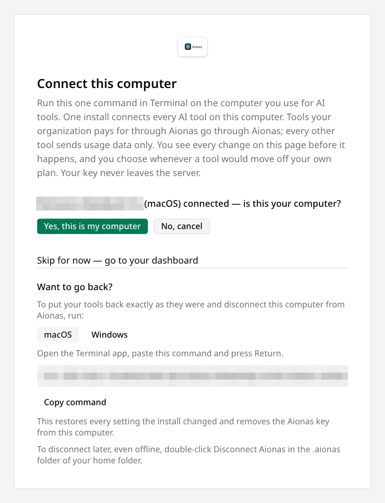
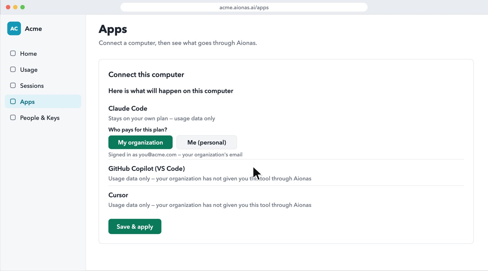
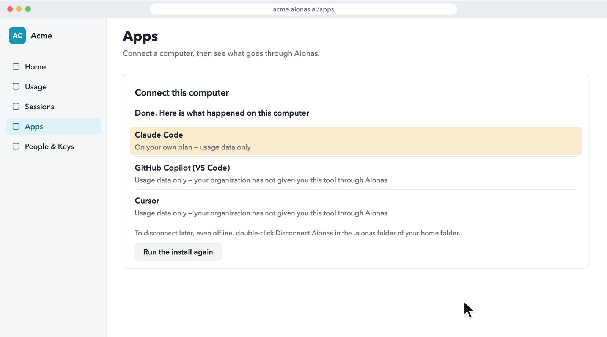
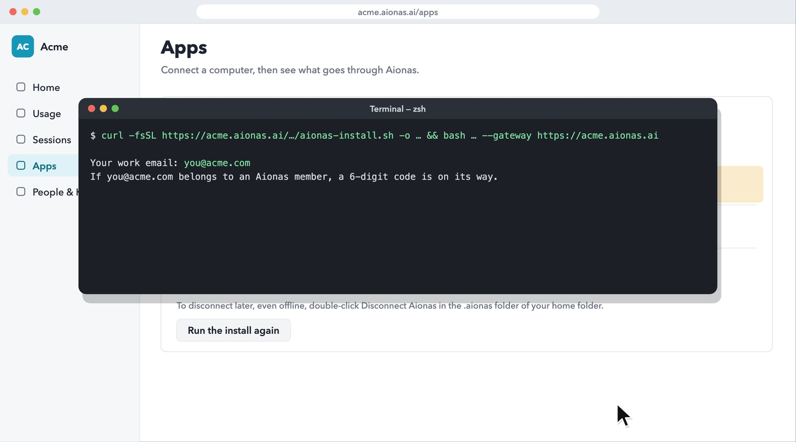

Install or update Aionas on your computer
About two minutes. Start in your browser, run one command, then finish in your browser.
Install once per computer. After that, the Aionas plugin updates itself with every Aionas release.
Sign in and copy your personal command
Sign in to your company's Aionas address (it looks like your-company.aionas.ai) and open Apps → Connect this computer. Pick macOS, Windows or Linux, then click Copy command.
The command is personal. It ends with a one-time pairing code (--pair ist-…) that links the install to your signed-in browser, so it works once and expires after 15 minutes. Copy a fresh one from the page each time, and don't share it.

Paste it on the computer where your AI tools run
Open a terminal there (on macOS the Terminal app, on Windows PowerShell), paste the command and press Return. If you use VS Code Remote or SSH, use a terminal on the remote machine.
You don't need an email code: the install recognizes your signed-in browser. The terminal shows a few short lines and then waits for you in the browser.

Show a real screenshot

Back in the browser: is this your computer?
The page shows your computer's name. Click Yes, this is my computer. Aionas then checks the AI tools on that computer.

Show a real screenshot

See what will happen to each tool, then Save & apply
Each AI tool found on the computer gets one line: whether it will connect through your organization, or stay on your own plan and send usage data only. Where it's your call, you choose. For a paid plan, Who pays for this plan? is already answered from your work email; change it only if you pay yourself.
Nothing changes on your computer until you click Save & apply.

Done. Restart your AI tools
The page lists what happened to each tool. Start a new Claude Code session (in VS Code, reload the window), and restart any app the terminal names. Sessions that were already open keep the old settings.

Not signed in to Aionas?
If you open the page without signing in, the command has no pairing code. The terminal then asks for Your work email: and the 6-digit code Aionas emails you (Enter the code:). The code stays hidden while you type. After that, continue with step 3 in the browser.
